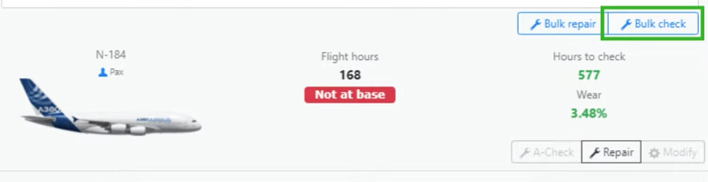

Summary
1. Avoid Using the Bank
Creating a separate account inccurs a 5% deposit fee for each deposit. It is best to retain all your money in your main bank account.
2. Skip the Stock Market
The stock market is not worth the investment for early-game and mid-game progress. Invest your money into your fleet and routes. You are not making any money from your airline. Only other airlines will because they have invested in your airline. However, you can make by investing into other airlines, but this is a feature that should wait for end-game progress.
3. Delay Cargo Operations
Cargo operations are less profitable and more costly. In order to maintain cargo operations, you would have already accumulated more than enough
money through your passenger fleet. Prioritize investing your money into a stronger passenger fleet so you can provide those funds into cargo operations.
Save cargo operations for end-game progress. In the meantime, use your points towards fuel and CO2 capacity.
4. A-Checks Include Repairs
A-Checks repair the check hours and the wear of an aircraft. A-Checks combine the inspection and repairs, so therefore, the feature offers a 2 for 1.
There is no need to spend money on separate repairs. Go for bulk checks rather than individual checks. You will get more out of your money and so will your
aircrafts.

5. Time Your Marketing
Buy marketing just before you depart your aircafts to maximize profits. Suggestion is to invest in 4 hour marketing with the highest percentage and to
include the eco-maketing for an additional 10% to the total reputation.

6. Understand Seat Configurations
1 Business Class Seat (J) = 2 Economy Class Seats (Y)
1 First Class Seat (F) = 3 Economy Class Seats (Y)
Plan seating layout accordingly to the demand on routes.
7. Start with Smaller and Cheaper Planes
Begin with cost effective planes such as the DC-9-10.
For example, one Airbus A320-200 (starter plane) - $6,770,196 - 164 passengers equals to 10 McDonnell Douglas DC-9-10s, which costs $6,596,570 in
total and can carry 900 passengers.
This can generate more revenue than a single A320-200.
Smaller planes allow more profit on multiple high-demand routes than one plane.

8. Speed Equals Profit
Speed allows planes to be faster and therefore complete more flights, which can turn into a higher overall profit.
9. Fuel and CO2 Quotas
Fuel is capped at a maximum price of $2,500 per 1,000 pounds.
CO2 is capped at a maximum price of $250 per 1,000 units.
You only need enough CO2 capacity to depart 20 planes. 20 planes is the maximum number of planes that can be departed simultaneously.
Use points of Fuel Capacity to purchase larger amounts when prices are low.
10. Ticket Pricing Strategy
For optimal prices, apply the auto pricing generator available when creating a new route.
Then, for each class, follow accordingly:
- Multiply the price of Economy Class by 1.1
- Multiply the price of Business Class by 1.08
- Multiply the price of First Class by 1.06
- Then, round down to the nearest whole number

By following these tips, you can enhance your airline manager experience.